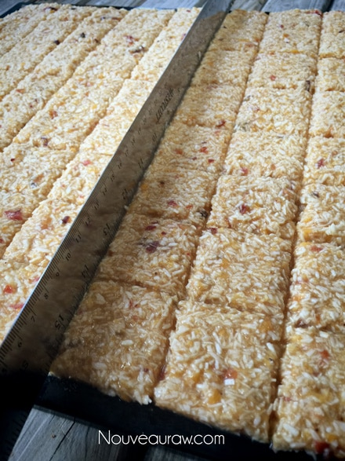
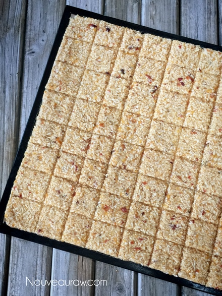

Cinnamon Peach Coconut Crackers

raw / vegan / gluten-free / nut-free
These crackers are super crunchy, light in texture, and bursting with peachy flavor. But wait there’s more, it is a cracker that has layers of flavor in each bite. The flavors are not muddled together, nope, you will detect the individual hints of peach, coconut, and banana.
Flavor Layering…
There is an actual term in the culinary world that refers to, unsurprisingly, flavor layering. It’s all about combining, expanding, and deepening flavors in a recipe. It’s typically done through the layering of spices, vegetables, cooking liquids, and through different techniques of cooking.
You can even achieve this by using just one single ingredient. For instance… Take tomatoes. Imagine starting a sauce with top-quality, BPA-free, canned tomatoes, layering in some tomatoes that have been oven-roasted until caramelized, then finishing it with some super-ripe fresh heirloom tomatoes. I know my recipes are mainly raw, I am just using this as an example…
You have the acidity of ripe tomatoes, a mild but slightly tart taste of good quality tomatoes, and that roasty-toasty, deep, rich tomato flavor that hits the middle of your mouth. A single ingredient prepared in three different ways, creating a layering of flavors.
I surely didn’t intend to get off on all that… what do tomatoes have to do with this recipe? Not a darn-tootin’ thing. I was just reminiscing about building layers of flavors in recipes and I managed to accomplish that in these crackers. Sometimes it is fun to create a recipe where all the ingredients meld together, leaving a person wondering just what the heck it was that they were tasting… and other times, it is preferable to be able to detect all the different ingredients used. I hope you enjoy these simple yet delicious crackers.
Ingredients:
Yields 1 (12×12) dehydrator tray = 64 crackers
- 2 ripe bananas (240 g without peel)
- 2 Tbsp maple syrup (optional)
- 1/4-1/2 tsp Himalayan pink salt
- 1 tsp ground Ceylon cinnamon
- 3 cups (269 g) shredded, dried coconut
- 3 1/2 cups (390 g) organic peaches
Topping:
Preparation:
- Blend the bananas, sweetener (if used), salt, and cinnamon in a food processor, fitted with the “S” blade, until creamy.
- The sweetener may not be required, depending on the ripeness of the fruit.
- Add shredded coconut and process till mixed.
- Add the peaches, pulse to blend them in, leaving small bits in the batter.
- Line the dehydrator tray with a non-stick teflex sheet.
- Spread the batter from edge to edge.
- Make sure that you spread it evenly so it dries evenly.
- Wipe the edges clean.
- Score the crackers into desired shapes and sizes. You can use a pizza cutter or a long metal ruler to create the score marks.
- Dehydrate at 145 degrees (F) for 1 hour, then reduce to 115 degrees (F) and continue drying for 10+ hours… until dry and crispy.
- Snap apart and let cool before storing in an airtight bag/container.
- They should last several weeks in the pantry and can be frozen for 3-4 months. If they start to soften due to humidity, throw them back in the dehydrator to crisp up.
The Institute of Culinary Ingredients™
- To learn more about maple syrup by clicking (here).
- Why do I specify Ceylon cinnamon? Click (here) to learn why.
- What is Himalayan pink salt and does it really matter? Click (here) to read more about it.
Culinary Explanations:
- Why do I start the dehydrator at 145 degrees (F)? Click (here) to learn the reason behind this.
- When working with fresh ingredients it is important to taste test as you build a recipe. Learn why (here).
- Don’t own a dehydrator? Learn how to use your oven (here). I do however truly believe that it is a worthwhile investment. Click (here) to learn what I use.


© AmieSue.com